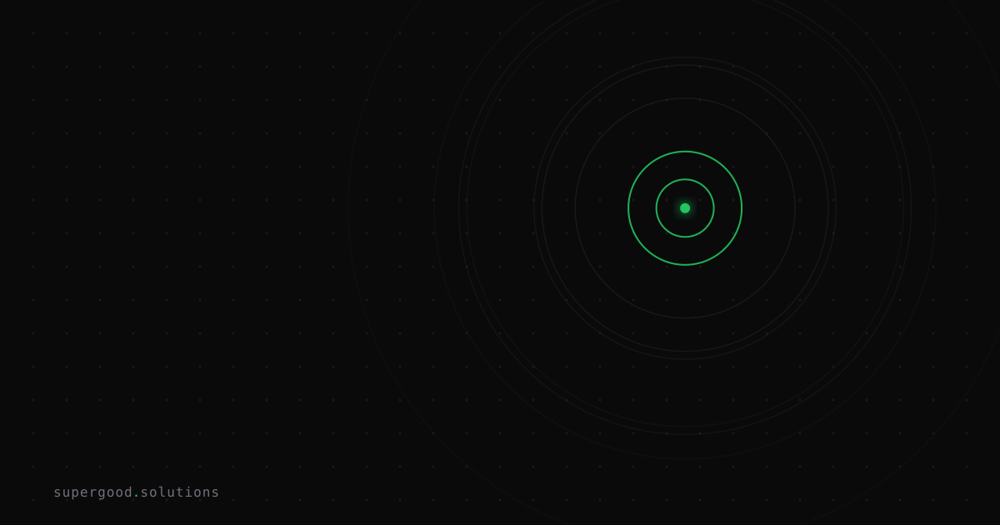

AI Can See and Hear Now, So Your Photos and Recordings Are No Longer Dead Storage
TL;DR: Most teams still think of AI as something you type questions into. Today's models also look at photos and scans and listen to recordings, which means the files nobody has time to open are now fair game.
Key Insight
Every company has a folder like this. Inspection photos from the field. Voicemails. Recorded customer calls. Scanned forms. Photos of whiteboards after a planning session. Someone captured all of it for a reason, and then almost none of it was ever looked at again, because looking at it meant a person had to sit and watch, listen, or squint.
That is the real change. For years, AI meant text in, text out, so work built on pictures and sound sat outside its reach. Modern models accept images, documents, and audio as inputs, not only words. A model can read a photo of a handwritten delivery note, compare it to a purchase order, and tell you what does not match. Give it an hour-long call and ask which customers mentioned a competitor.
The exciting demos are about video and live conversation. The useful work sits one step earlier and is more boring: stuff you already recorded and never reviewed. Point the tool at the archive you already have.
Seeing and hearing are not the same capability. Image and PDF input is built into many language models directly. Audio is often a two-step job: a speech-to-text model turns the recording into a transcript, then a language model reads the transcript. OpenAI's speech-to-text guide describes uploading recorded audio files in formats like mp3, wav, and m4a and getting a transcript back. For a non-technical team the distinction barely matters, but it explains why a vendor can be great at documents and mediocre at calls.
Why Teams Miss This
Three habits keep this work off the table.
- "That is not a writing job." If your people do not draft emails all day, AI looks irrelevant. But an inspector, a dispatcher, or a claims reviewer spends the day looking at things and listening to things. Those are now valid inputs.
- "If nobody reads it today, nobody needs it." Unread files feel like they have no value. In practice they are where the answers live: why returns spiked, which sites keep failing inspection, what customers actually ask for before they cancel. Nobody reads them because reading them was too expensive, not because they were worthless.
- "It will either be perfect or useless." Neither is true. Anthropic's own vision documentation says the model might make mistakes with low-quality, rotated, or very small images, that counts of objects can be approximate, and that high-stakes uses need human review. That is a description of a tool that is strong on clean inputs and needs a second look on messy ones, like a new hire.
How to Actually Do It
Pick one folder, not a program. Use this order.
- Find the pile. Ask your team where files go to be forgotten: a shared drive of site photos, a voicemail inbox, a folder of recorded calls, a scanner output directory.
- Pick a question a person already asks of it. "Does this photo show the damage described in the claim?" "Which of these calls mention a cancellation?" If nobody has a question, the pile is not your first target.
- Test on the worst files first. Grab 30 real examples, including the blurry photo, the noisy call, the page scanned sideways. Clean samples tell you nothing. The ugly ones show you where a human has to stay in the loop.
- Write the right answers down before you run anything. Do it by hand for all 30. Without that, you are judging by vibes.
- Ask for evidence, not just answers. A reviewer can check an answer in seconds if the model points to the spot in the photo or the time in the recording.
A simple request looks like this. The key habit is making the model say what it saw or heard and how sure it is:
You are reviewing a recorded customer call.
Answer three questions:
1. Did the customer mention canceling? (yes or no)
2. Quote the exact sentence and give the timestamp.
3. How confident are you, and what would make you less sure?
If the audio is unclear at that point, say so instead of guessing.Then keep score. Count how many it got right, how many it flagged as unsure, and how many it got wrong while sounding certain. The third number decides whether you can trust it without a person checking.
Mind the privacy side before you start. Recordings and photos often include names, faces, license plates, and account numbers. Check what your vendor does with uploaded files and whether the call recording consent you collected covers this use.
What We've Learned
The pattern across teams that get value here is that they started from a pile of files, not from a technology. The question "what can AI do with video?" goes nowhere. The question "what is sitting in this folder that we paid to collect and never used?" finds a first project in an afternoon.
Your next experiment: this week, open the one folder in your team that is mostly photos, scans, or recordings. Pull 30 files, write down what a person would say about each, and run them through a model that accepts that file type. Record right, unsure, and confidently wrong. If the confidently wrong count is low, you have found your first automation.
Sources
- Anthropic, vision documentation and stated limitations: Vision, Claude Platform Docs
- OpenAI, transcribing recorded audio files: File transcription guide
- Anthropic, reading PDFs including charts and visual content: PDF support, Claude Platform Docs
Have a specific workflow in mind?
Bring it to a Quick Scan — a live working session where we'll tell you honestly whether it should be an agent, a workflow, or left alone, before you spend a dollar building it. You get 3 prioritized recommendations on the call, a one-page summary after, and the $500 credited toward any engagement within 30 days.
Get new posts + practical agent-ops notes
One email when something new goes up. No nurture sequence, no spam — unsubscribe whenever you want.